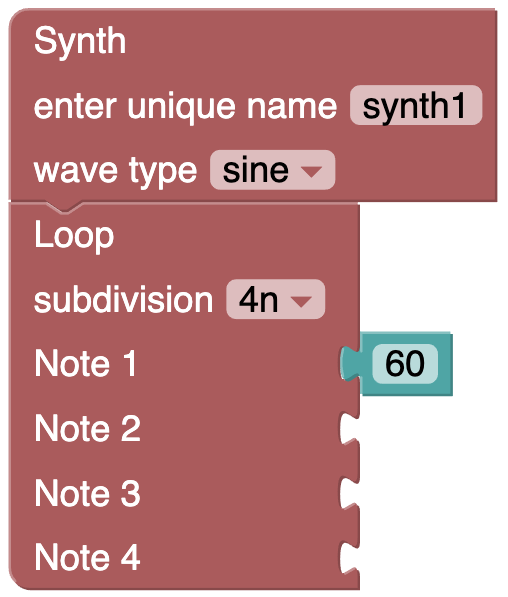

Tutorial (Hello World)
In this example, a synthesizer with a sinewave oscillator will cycle through a 4 note loop of quarter notes, playing note 60 on the downbeat. Lets take a closer look:
- A Synth block is connected to a Loop block.
- The Loop block's subdivision is set to "4n", for quarter note.
- The Loop block has a Number block connected to the "Note 1" input.
- The Number block is set to 60, which is the MIDI pitch value of the musical note known as middle C, or C4.
Go ahead and recreate the example on your own!